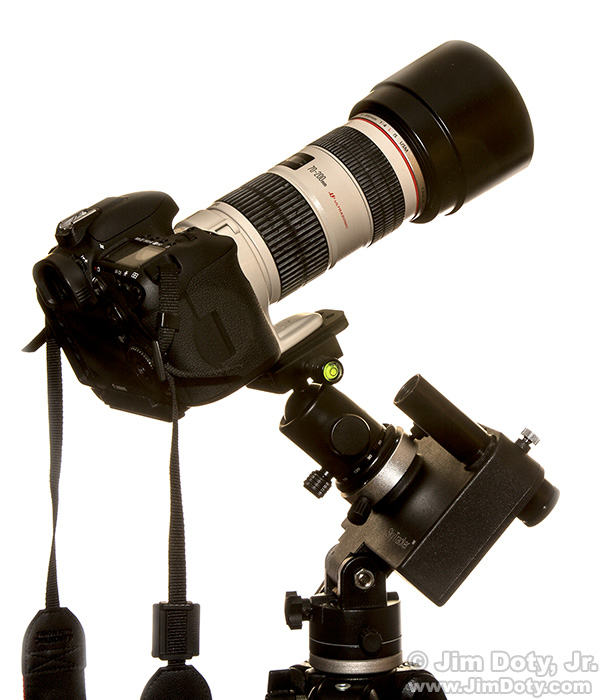

Initially this website was made for a class I was taking but I decided I would keep it to share my photos with the interwebs.
I'm pretty bad with designing things so please forgive my color choices
This is a hobby I picked up in late 2015.
You can take long exposures of the nighttime sky to reveal many more stars and other objects in the universe surrounding us
There are few ways to do astrophotography
I am currently working with a DSLR and a tracking mount
The tracking mount allows users to cancel out the rotation of Earth which allows for longer exposures and more details/stars, without a tracking mount stars start to look like streaks in the sky.
I need to include a picture of my gear but for now I'll borrow one found online
I use a Nikon D3300 + various lenses (18-55mm kit / 50mm 1.8 / 55-300mm 4.5)
I also use an iOptron Skytracker - it is a lightweight and portable tracking mount designed for cameras
